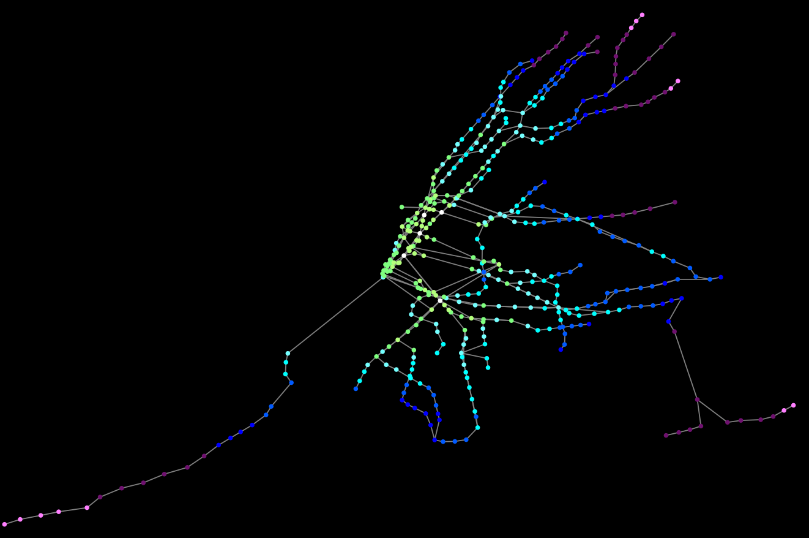
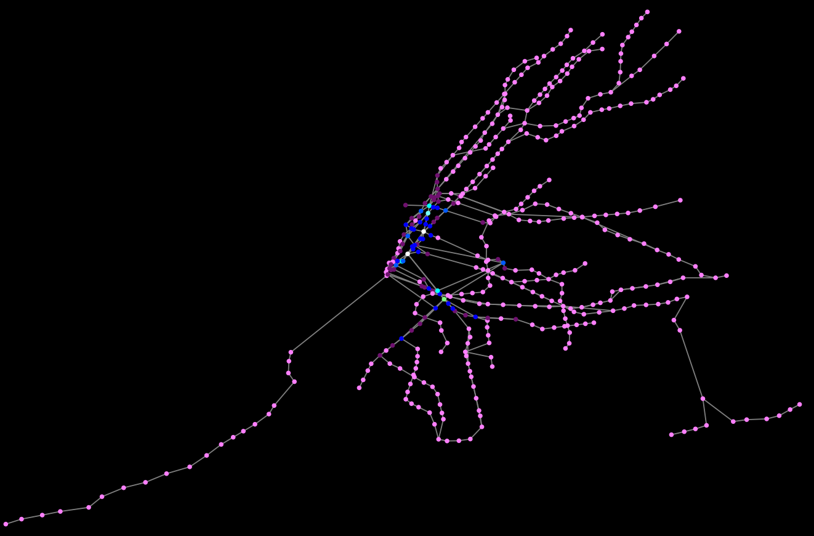
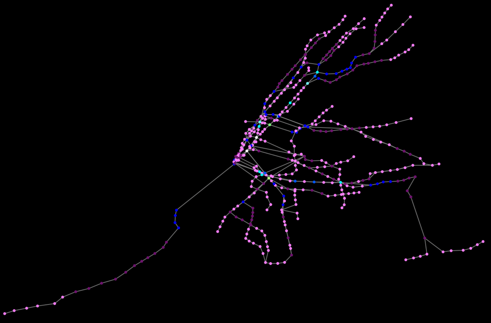
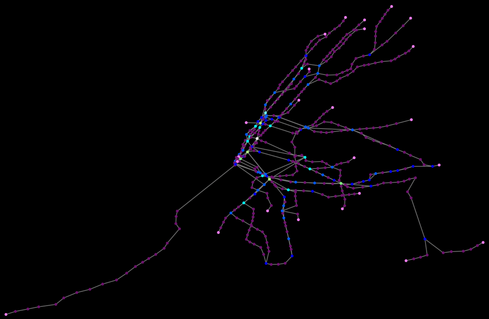

Visualizations of different centrality measures on all MTA subway stations plotted with NetworkX.
All centrality measures are linearly scaled and color-coded accordingly (bright green = highest centrality, bright purple = lowest centrality).
Station names and distances between stations are removed from maps to aid readability.
Click to view:
> Closeness Centrality

> Betweenness Centrality

> Eigenvector Centrality

> Node Degree Centrality

Each centrality measure tells us unique information about the connective integrity of the graph. While closeness centrality measures the
length of edges between nodes (which tells us how far each subway station is in relation to the remainder of the MTA system), node degree
centrality counts the number of other stations a given station is directly connected to.